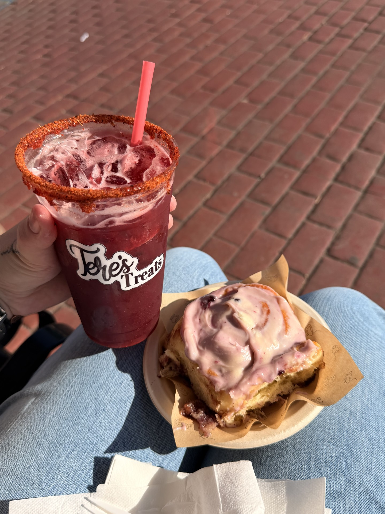

<!DOCTYPE html>
<html lang="eng">
<head>
 <meta charset="UTF-8">

    <meta name="viewport" content="width=device-width, initial-scale=1.0">

<link rel="stylesheet" href="../assets/css/styles.css">

    <title>Interests</title>

</html>
</head>

<Body>

    <!--Navigation ROOT PAGE Bar-->
<nav>
    <a href="index.html">Home</a>
    <a href="about.html">About</a>
    <a href="interests.html">Recently</a>
    <!--Books Drop Down-->
    <div class="dropdown">
        <a href="books/books.html">Books</a>
        <div class="dropdown-content">
            <a href="books/books.html">Books</a>
            <a href="books/bookblog.html">Blog</a>
            <a href="books/completed.html">Completed</a>
        </div>
    </div>
    <!--Travel Drop Down-->
    <div class="dropdown">
        <a href="travel/travel.html">Travel</a>
        <div class="dropdown-content">
            <a href="travel/travel.html">My Travels</a>
            <a href="travel/travelblog.html">Travel Blog</a>
        </div>
    </div>

    <a href="projects.html">Projects</a>
    <a href="goals.html">Goals</a>
</nav>  


<h1>Recently I've Been Up To!</h1>
<h2>Hi there! If you're on this page, it is really just about random activities I've done recently. Usually farmers markets, or day trips. I'll just be sharing little tid bits of my life here!</h2>

<article class="post-card">

    <div class="post-slideshow">
        
    </div>

    <div class="post-content">
        <h3>Nampa Farmers Market</h3>
<p class="post-date">August 29, 2026</p>

<p>
    We spent the morning walking around the Nampa Farmers Market and checking out
    all of the different booths. I usually already have a few regular vendors I like
    to visit, along with a couple new ones I want to try.
</p>

<p>
    Today I tried a huckleberry roll from Bella's Bakery. It was similar to a
    cinnamon roll, but made with Idaho's staple berry, and it was absolutely
    delicious! I also got a freshly made strawberry hibiscus juice from Tere's
    Treats with a Tajín and chamoy rim.
</p>

<p>
    We wandered around for a while and I somehow managed to avoid my usual wine
    tasting stop at Vizcaya Winery. They almost always have a booth with great wines
    to sample, but honestly, that's probably for the best considering I really do
    not need any more bottles in my collection right now.
</p>
    </div>

</article>


<footer>
    <p>&copy; 2026 Miranda Trent | <a href="https://www.linkedin.com/in/mirandaptrent">LinkedIn</a></p>
    <p class="tempest-quote">
        “We are such stuff / As dreams are made on, and our little life / Is rounded with a sleep.”
    </p>

    <p class="tempest-attribution">
        — Prospero, <em>The Tempest</em>, William Shakespeare
    </p>
</footer>

</Body>